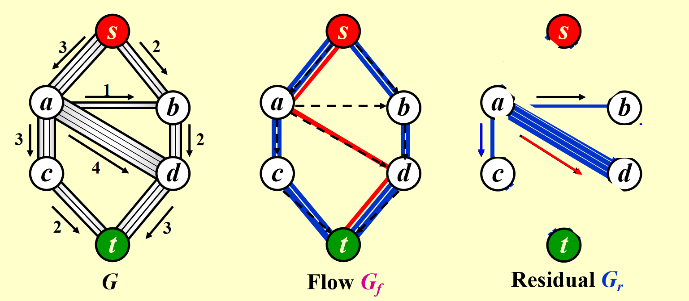
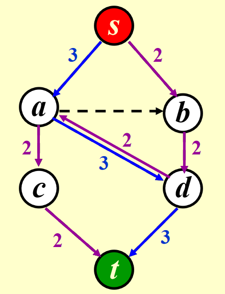
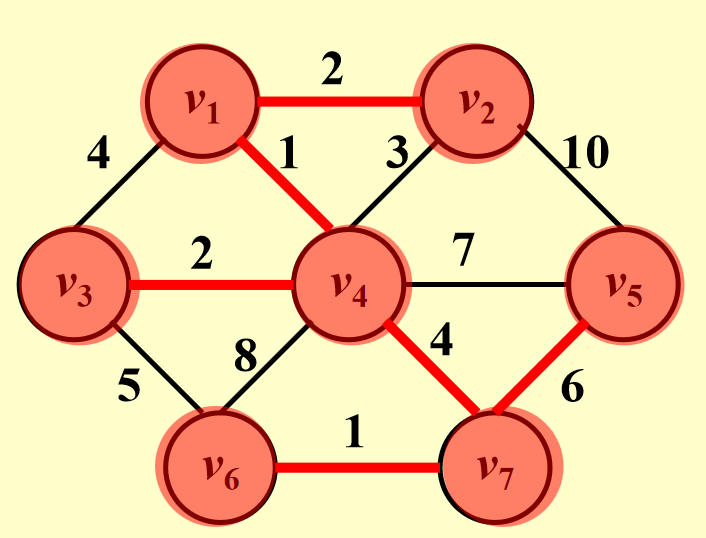
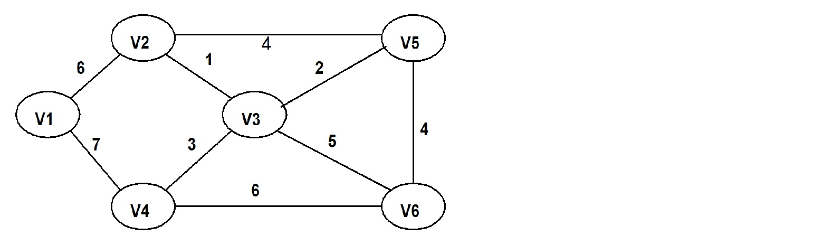

图：网络流与最小生成树（MST）
一、网络流问题
1. 简介
网络流问题研究如何在网络中从起点（源点， \( s \) ）到终点（汇点， \( t \) ）传输最大量的“东西”（如水、数据或流量）。网络中的每条边都有一个容量，限制了可以通过的流量大小。可以想象成一个水管系统，不同水管有不同的宽度，我们的目标是最大化从源点到汇点的总流量。
示例：考虑一个管道网络：
- 源点 ( \( s \) )：水流的起点。
- 汇点 ( \( t \) )：水流的终点。
- 管道：带有容量的边（例如容量为3、2、1单位）。
网络流示例：

任务：确定从 \( s \) 到 \( t \) 的最大流量。
关键规则：对于除 \( s \) 和 \( t \) 外的任意节点 \( v \) ，流入的流量等于流出的流量（流量守恒）：
2. 基本概念
- 容量 ( \( c(u, v) \) )：边能承受的最大流量。
- 流量 ( \( f(u, v) \) )：边上的实际流量，满足 \( 0 \leq f(u, v) \leq c(u, v) \) 。
- 残余网络 ( \( G_r \) )：显示分配流量后剩余的容量。对于边 \( (u, v) \) ，残余容量为 \( c(u, v) - f(u, v) \) 。
- 增广路径：在残余网络 \( G_r \) 中从 \( s \) 到 \( t \) 的一条路径，路径上有剩余容量可用来增加流量。
3. 方案：允许撤销决策
为了解决这个问题，算法通过在残余网络中添加反向边来“撤销”流量：
- 对于流量网络 \( G_f \) 中每条边 \( (v, w) \) 的流量 \( f(v, w) \) ，在残余网络 \( G_r \) 中添加反向边 \( (w, v) \) ，容量为 \( f(v, w) \) 。
- 这允许我们重新分配流量，避免陷入死胡同。
命题：如果所有容量是有理数，这个算法总能找到最大流量（即使网络有环）。
示例：
-
在通过 \( s \to a \to d \to t \) 发送2单位流量后：
- \( G_r \) 中添加 \( d \to a (2) \) .
- 之后，可以用 \( d \to a \) 重新引导流量。

4. 算法分析
假设容量为整数：
-
基础复杂度：用BFS找增广路径需要 \( O(|E|) \) ，可能需要最多 \( f \) 次迭代（ \( f \) 是最大流量）。总时间：
\[ O(|E| \cdot f) \] -
改进1：选择流量增量最大的路径（修改Dijkstra算法）。时间为：
\[ O(|E|^2 \log |V|) \]当容量较小时适用。
-
改进2：选择边数最少的路径（用BFS）。时间为：
\[ O(|E|^2 |V|) \] -
特殊情况：如果除 \( s \) 和 \( t \) 外的每个节点只有一个容量为1的入边或出边，时间降为：
\[ O(|E| |V|^{1/2}) \]
最小费用流：在所有最大流中，找到总费用最低的流（每条边有单位流量的费用），这是后续的扩展内容！
二、最小生成树（MST, minimum spanning tree）
1. 简介
最小生成树（MST）是在一个加权无向图中，连接所有节点且总边权最小的树形结构。
从一个顶点出发，在保证不形成回路的前提下，每找到并添加一条最短的边，就把当前形成的连通分量当做一个整体或者一个点看待，然后重复“从已知顶点找最短的边并添加”的操作。
一个图可能有多种生成树，我们要找总权值最小的那个。
当然，最小生成树不一定唯一，也可能不存在。具体地说，最小生成树在连通图中必然存在，但在非连通图中不存在。
2. 基本概念
- 生成树：包含所有顶点 ( \( |V| \) )，有 \( |V| - 1 \) 条边，无环。
- 最小生成树（MST）：边权总和最小的生成树。
-
关键属性：
- 仅当图连通时存在MST。
- 有 \( |V| - 1 \) 条边。
- 添加非树边会形成环。
3. 贪心算法
有两种贪心算法来求MST：Prim算法和Kruskal算法。
3.1 Prim算法
思路：从一个起始节点开始，逐步扩展MST，每次添加最便宜的边。
步骤：（very similar to Dijkstra's algorithm）
- 从任意顶点开始（例如 \( v_1 \) ）。
- 选择连接当前树和新顶点的最小权边。
- 将该边和新顶点加入树。
- 重复直到包含所有顶点。
Prim 算法示例

| 步骤 | 已选顶点集合 | 候选边（连接已选和未选） | 选择的最小边 | 新加入顶点 |
|---|---|---|---|---|
| 1 | \(\{v_1\}\) | \(v_1v_4(1)\), \(v_1v_2(2)\), \(v_1v_3(4)\) | \(v_1v_4(1)\) | \(v_4\) |
| 2 | \(\{v_1, v_4\}\) | \(v_1v_2(2)\), \(v_1v_3(4)\), \(v_4v_3(2)\), \(v_4v_5(2)\), \(v_4v_6(8)\), \(v_4v_7(4)\) | \(v_4v_3(2)\) | \(v_3\) |
| 3 | \(\{v_1, v_4, v_3\}\) | \(v_1v_2(2)\), \(v_4v_5(2)\), \(v_4v_6(8)\), \(v_4v_7(4)\), \(v_3v_6(5)\) | \(v_1v_2(2)\) | \(v_2\) |
| 4 | \(\{v_1, v_4, v_3, v_2\}\) | \(v_4v_5(2)\), \(v_4v_6(8)\), \(v_4v_7(4)\), \(v_3v_6(5)\), \(v_2v_5(10)\) | \(v_4v_5(2)\) | \(v_5\) |
| 5 | \(\{v_1, v_4, v_3, v_2, v_5\}\) | \(v_4v_6(8)\), \(v_4v_7(4)\), \(v_3v_6(5)\), \(v_5v_7(6)\) | \(v_4v_7(4)\) | \(v_7\) |
| 6 | \(\{v_1, v_4, v_3, v_2, v_5, v_7\}\) | \(v_4v_6(8)\), \(v_3v_6(5)\), \(v_7v_6(1)\) | \(v_7v_6(1)\) | \(v_6\) |
最终的最小生成树的边为\(\{v_1v_4, v_4v_3, v_1v_2, v_4v_5, v_4v_7, v_7v_6\}\)。
3.2 Kruskal算法
思路：优先选择权值最小的边，跳过会形成环的边。
步骤：
- 按权值对所有边排序。
- 从空树 \( T \) 开始。
- 添加不形成环的最小权边。
- 重复直到 \( T \) 有 \( |V| - 1 \) 条边。
伪代码：
void Kruskal(Graph G) {
T = {};
while (T 中边数 < |V| - 1 且 E 不为空) {
从 E 中选择最小权边 (v, w);
从 E 中移除 (v, w);
if ((v, w) 不形成环)
将 (v, w) 加入 T;
else
丢弃 (v, w);
}
if (T 中边数 < |V| - 1)
报错("无生成树");
}
时间复杂度：使用排序和并查集，复杂度为：
Kruskal算法示例
-
所有边按权重排序：首先将给定的边按权重升序排列：
边 权重 \( v_1v_4 \) 1 \( v_7v_6 \) 1 \( v_1v_2 \) 2 \( v_4v_3 \) 2 \( v_4v_5 \) 2 \( v_2v_4 \) 3 \( v_3v_1 \) 4 \( v_4v_7 \) 4 \( v_3v_6 \) 5 \( v_5v_7 \) 6 \( v_4v_6 \) 8 \( v_2v_5 \) 10 -
初始化并查集（每个顶点自成一个集合）
一般情况下，我们的初始连通分量： \( \{v_1\}, \{v_2\}, \{v_3\}, \{v_4\}, \{v_5\}, \{v_6\}, \{v_7\} \) 。
-
逐步选边并检查环
步骤 选择的边 权重 是否加入MST 理由（是否连通） 更新后的连通分量 1 \( v_1v_4 \) 1 Y \( v_1 \) 和 \( v_4 \) 不连通 \( \{v_1, v_4\}, \{v_2\}, \{v_3\}, \{v_5\}, \{v_6\}, \{v_7\} \) 2 \( v_7v_6 \) 1 Y \( v_7 \) 和 \( v_6 \) 不连通 \( \{v_1, v_4\}, \{v_2\}, \{v_3\}, \{v_5\}, \{v_6, v_7\} \) 3 \( v_1v_2 \) 2 Y \( v_1 \) 和 \( v_2 \) 不连通 \( \{v_1, v_2, v_4\}, \{v_3\}, \{v_5\}, \{v_6, v_7\} \) 4 \( v_4v_3 \) 2 Y \( v_4 \) 和 \( v_3 \) 不连通 \( \{v_1, v_2, v_3, v_4\}, \{v_5\}, \{v_6, v_7\} \) 5 \( v_4v_5 \) 2 Y \( v_4 \) 和 \( v_5 \) 不连通 \( \{v_1, v_2, v_3, v_4, v_5\}, \{v_6, v_7\} \) 6 \( v_2v_4 \) 3 N \( v_2 \) 和 \( v_4 \) 已连通 （跳过，避免环） 7 \( v_3v_1 \) 4 N \( v_3 \) 和 \( v_1 \) 已连通 （跳过，避免环） 8 \( v_4v_7 \) 4 Y \( v_4 \) 和 \( v_7 \) 不连通 \( \{v_1, v_2, v_3, v_4, v_5, v_6, v_7\} \) -
终止条件
已选边数 = 顶点数 \( 7 - 1 = 6 \) 条，算法结束。
总权重：\( 1 + 1 + 2 + 2 + 2 + 4 = 12 \)
例题
（FDS HW10）To find the minimum spanning tree with Kruskal's algorithm for the following graph. Which edge will be added in the final step?

答案：\((v_1,v_2)\)。
具体不多分析，很容易看出来。
4. 比较
- Prim算法：适合稠密图（类似Dijkstra算法）。
- Kruskal算法：适合稀疏图（关注边）。